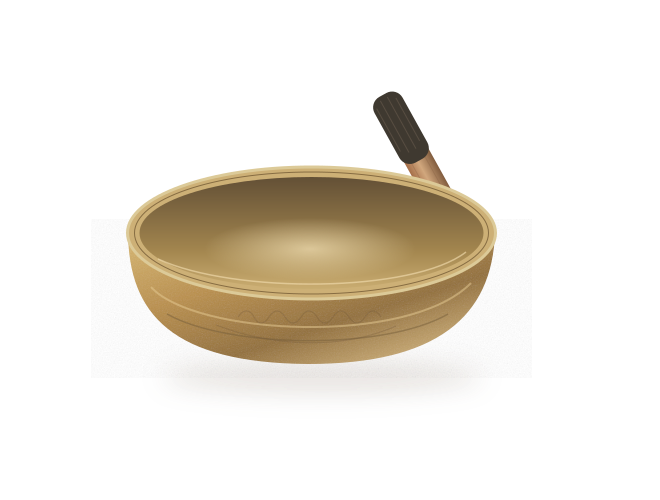

You don’t need to arrive
with it all figured out.
You might be craving quiet. Human connection. A place to speak honestly, or time to listen to yourself.
Perhaps you spend a lot of time caring for others and would welcome some care yourself. Perhaps there’s a pattern you want to understand. You can begin with a question, a feeling, or simple curiosity.
What would feel
supportive today?
You can choose a starting point.
We’ll talk about how to shape the session together.

Synthesized tone; not a recording of Jen’s bowls.Sound &
stillness.
Tibetan singing bowls are a central part of my work. Individual sessions offer time with sound, quiet, and inward attention.
We talk about what you’re looking for and what to expect, then shape the experience around you.
Ask about sound sessionsPlatonic touch,
at your pace.
Space for nurturing, non-sexual human connection.
Before touch begins, we discuss preferences and boundaries. You choose what you participate in and can ask to adjust, pause, or stop throughout the session.
Ask about platonic touchGuided
self-inquiry.
Some patterns keep returning—in relationships, choices, fears, or the stories we tell ourselves.
Together, we can explore what you’re noticing with curiosity and compassionate reflection. There is room for encouragement, a different perspective, and supportive accountability.
Ask about self-inquirySessions may also include breath, meditation, movement, or expression—always by agreement.
Sometimes being held is touch.
Sometimes it’s being heard.
Sometimes it’s space to hear yourself.
Care begins
with listening.
There is no single way you need to show up.
We begin with where you are.
- 01
Reach out.
Tell me a little about what interests you. Questions and uncertainty are welcome.
- 02
Talk it through.
We discuss your preferences, session options, and practical details, including rates before booking.
- 03
Shape the session.
We agree on a starting point and keep communicating as we go. You can adjust, pause, or stop.
Your choices belong here. You can inquire about sound or self-inquiry without including touch. All touch is platonic and non-sexual.
“I value careful listening, clear boundaries, curiosity, and meeting the person in front of me.”
Draft introduction for Jen’s review.Hi, I’m Jen.
My work brings together sound, body-based practices, platonic connection, and honest reflection.
Sessions are individualized because people arrive with different needs, experiences, and ways of receiving care. Just Be Held is an invitation to make room for yourself—with someone alongside you.
A particular welcome to men. Men are warmly welcome here, including those looking for room to receive nurturing care, explore vulnerability, or experience platonic connection. Adults of all genders are welcome.
You can
ask.
What if I’m not sure what I need?
That’s a perfectly good place to start. You can reach out with a question, a particular practice in mind, or a sense that you’d like some space for yourself.
Does every session involve touch?
No. You can inquire about sound or guided self-inquiry without including touch. We discuss the session together before beginning.
Is this therapy or formal coaching?
Guided self-inquiry is offered as compassionate reflection and supportive accountability. It is not presented as psychotherapy or formal coaching.
Where are sessions available?
Jen’s current service area and session setting will be added before inquiries open. Availability will reflect where she is actually working.
Let’s begin with
a conversation.
A brief message is enough. Questions are welcome.
Current location and session details are being finalized.
Session options and rates are shared before booking.